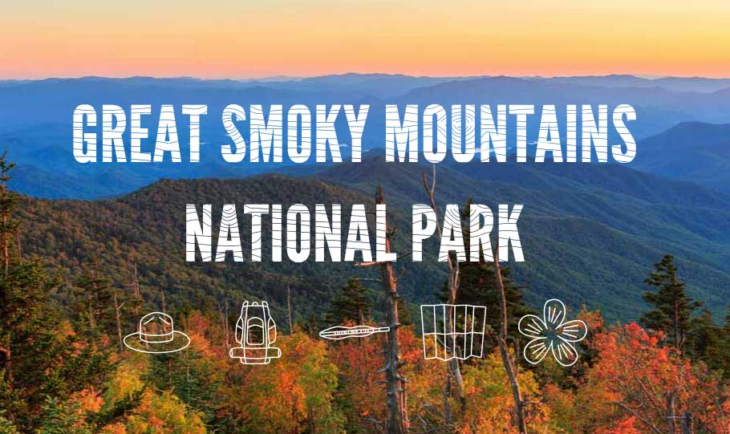

View the project live or view the code on Github.
This is my final project I completed for The Iron Yard. I had two weeks to take this project from research and discovery to the final live, coded version. I redesigned the main page of the National Park Service website and four pages of the Great Smoky Mountains National Park website. You can access the pages I redesigned for the Smokies by clicking "featured park" in the header of the National Park website.
The National Park Service is facing a problem of an aging visitor base. I had three goals for this project. 1. To create a government website that is authoritative and trustworthy while being friendly and inviting. 2. To make the NPS & Smokies website have a more modern feel that appeals to millenials and also streamlines the vibe of their social presence with their website. 3. To create a cohesive design system that could be applied to all Parks within the NPS system.
RWD, HTML, Sass, Bourbon, JS, Photoshop, Illustrator.
For the research and discovery phase, I completed a wordlist, SWOT analysis, competitive market study, website analysis, sketches, wireframes, styletiles, and comps.
